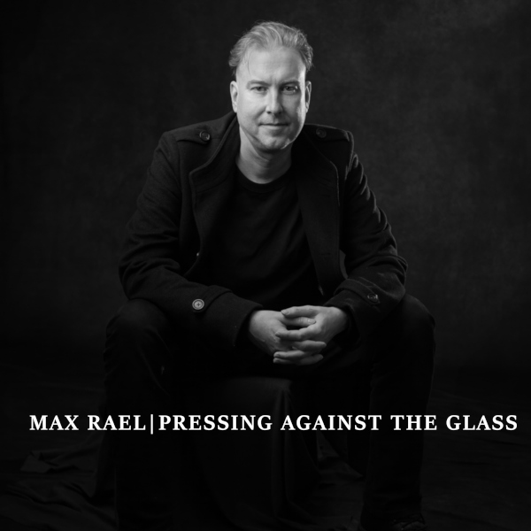

Pressing Against the Glass
Max Rael
- Release Date
- 20 June 2025
- Label
- Liquid Len Recording Company
- Parent Album
- The Enemy Is Us (2025)
- Formats
- Digital Single
Overview & Production Lore
Released alongside the debut solo album The Enemy Is Us on 20 June 2025, 'Pressing Against the Glass' is a dramatic, melodic electronic track driven by spoken-word vocals and atmospheric synth arrangements.
Continuing the outsider exploration introduced on 'Slightly Less Than Human', the song centers on the stark image of standing outside alone in the cold, looking through a window into a warm, safe domestic world that remains permanently out of reach. The narrative evokes literary and cinematic touchstones such as Heathcliff peering through the windows of Thrushcross Grange in Wuthering Heights and Frank Abagnale Jr. standing unseen in the Christmas snow outside his mother's new family home in Catch Me If You Can.
Through sparse, melancholic phrasing, the track reflects on exile, lost belonging, and the quiet grief of being barred from connection with the people you love.
Tracklist
- 01 Pressing Against the Glass ALBUM TRACK 02 • SINGLE
Credits & Attribution
- Written by: Max Rael
- Vocals, keyboards & programming: Max Rael
- Produced & mixed by: Max Rael
- Additional mixing: Caden Clarkson
- Mastered by: Pete Maher
- Released by: Liquid Len Recording Company
- Publicity: Shameless Promotion PR
- Cover artwork & photographs: Filiz Photography (Copyright © 2025 FilizPhotographyUK — must not be altered or sold without photographer's permission)